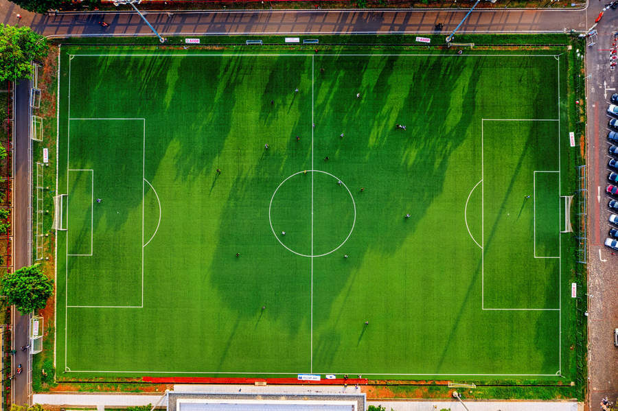

Футбол — самый популярный вид спорта в мире. В эту игру играют более 250 миллионов человек в более чем 200 странах. Футбол объединяет людей разных культур и национальностей.
Футбольный матч длится 90 минут и состоит из двух таймов по 45 минут. На поле одновременно находятся две команды по 11 игроков в каждой. Цель игры — забить мяч в ворота соперника.
Основные правила:
— Игроки не могут касаться мяча руками (кроме вратаря)
— Гол засчитывается, когда мяч полностью пересекает линию ворот
— При нарушении правил назначаются штрафные удары или пенальти
Рекорд посещаемости: Матч между сборными Бразилии и Уругвая на стадионе «Маракана» в 1950 году посетили около 200 000 зрителей. Это абсолютный рекорд в истории футбола!

Международная федерация футбола (ФИФА) — руководящий орган мирового футбола. Узнать больше о правилах и турнирах можно на официальном сайте: FIFA.com